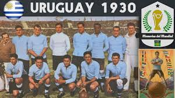
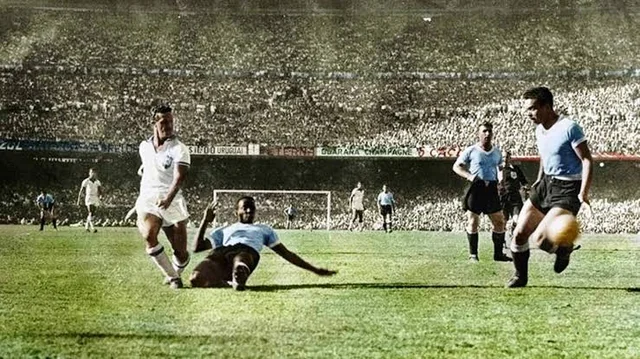

História do Futebol
Uma jornada através dos momentos que definiram o esporte
Origens Antigas
Jogos com bola existiam na China (Cuju), Grécia e Roma antigas. O futebol moderno, porém, nasceu na Inglaterra no século XIX.
Fundação da FA
A Football Association é criada na Inglaterra, estabelecendo as primeiras regras oficiais do futebol moderno.
Primeira Copa do Mundo
Uruguai sedia e vence a primeira Copa do Mundo FIFA, derrotando a Argentina por 4-2 na final.
Maracanazo
Em um dos maiores choques da história, o Uruguai vence o Brasil por 2-1 no Maracanã, conquistando a Copa do Mundo diante de quase 200 mil torcedores brasileiros.
Gol do Século
Diego Maradona marca o "Gol do Século" contra a Inglaterra na Copa do Mundo, driblando meio time adversário.

Virada em Lima
O Flamengo protagoniza uma das maiores viradas da história do futebol sul-americano, vencendo o River Plate por 2-1 na final da Libertadores em Lima, com dois gols nos minutos finais.